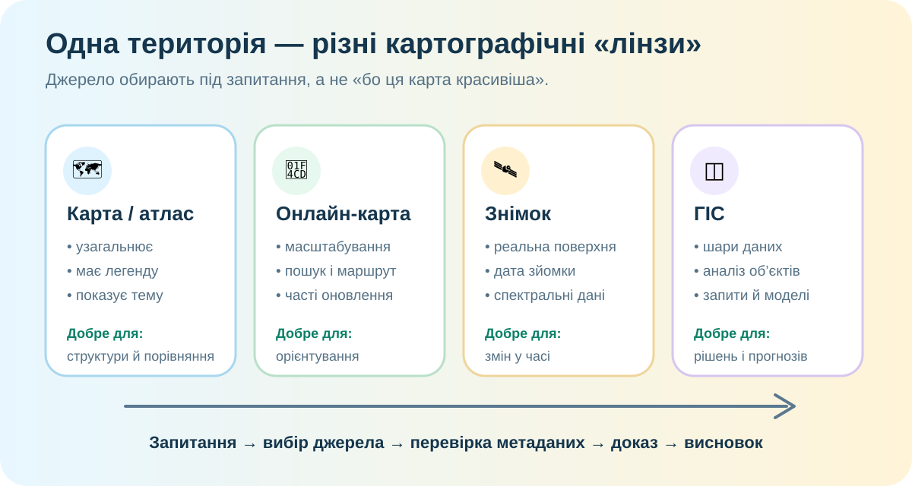

Одна Україна — чотири різні карти. Яка з них «правильна»?
Уявіть, що треба відповісти на чотири запитання: де прокласти маршрут, де змінилася рослинність, де проходять адміністративні межі, які області мають найбільшу густоту населення.

Картолаб: читаємо не «картинку», а систему даних
Назвіть щонайменше 5 типів об’єктів, які можна прочитати з цієї карти: населені пункти, дороги, річки, кордони, водойми тощо.
Що з цієї карти не можна надійно визначити: тип ґрунту, вік гірських порід, густоту населення, температуру поверхні? Поясніть чому.
Дуель джерел: яке обрати для конкретної задачі?
Після сильної зливи треба швидко оцінити, де зросла площа підтоплення. Яке джерело оберете і чому?
Треба скласти безпечний піший маршрут містом і знайти переходи, зупинки та лікарню. Що оберете?
Національний атлас України — Інститут географії НАНУ ↗ NASA Worldview ↗ Copernicus Browser ↗
ГІС — не «карта з кнопками»
Лінії з атрибутами: тип дороги, покриття, обмеження, напрям.
Річки, озера, водосховища, зони можливого затоплення.
Точки або полігони з чисельністю, густотою та іншими показниками.
Для кожного шару перевірте: хто створив, коли оновлено, масштаб / роздільність, що саме вимірюється.
Дуже детальна карта 2005 року не обов’язково краща за менш детальну карту 2026 року. Якість залежить від задачі й актуальності.
Теорія після дослідження
Модель простору, де інформацію відібрано, узагальнено та закодовано умовними знаками відповідно до мети.
Математична основа, картографічне зображення, легенда, назва, масштаб, додаткові графіки й пояснення.
Цифрове картографічне зображення, яке можна масштабувати, шукати об’єкти, оновлювати й поєднувати з іншими даними.
Вебсередовище для пошуку, перегляду й часто аналізу геопросторових даних та їхніх метаданих.
Система для збирання, зберігання, аналізу й візуалізації даних, прив’язаних до місця.
Поєднує позиціонування, цифрові карти та алгоритми маршрутизації; її результат залежить від актуальності даних.
Коротке відео: що таке GIS?
Під час перегляду знайдіть відповідь: чим ГІС відрізняється від звичайної карти?
CER: яку карту треба обирати?
Сформулюйте тезу: «Найкраще картографічне джерело — це…» Не називайте конкретний сервіс; сформулюйте принцип.
Наведіть два докази з уроку: один про зміст/шари, другий про актуальність або масштаб.
Поясніть, чому різні географічні задачі потребують різних карт, даних і рівнів деталізації.
Домашнє: міні-аудит картографічного джерела
§ 6. Відкрийте будь-який картографічний сервіс, яким реально користуєтеся. Запишіть 5 пунктів: 1) хто створює дані; 2) що показує карта; 3) що не показує; 4) наскільки дані актуальні; 5) для якої задачі цей сервіс підходить найкраще.
Тест відкриється після ідентифікації
Джерела й реальні дані
- OpenStreetMap — базова інтерактивна карта.
- Інститут географії НАН України — Національний атлас України.
- NASA Earthdata Worldview — перегляд супутникових даних.
- Copernicus Data Space Ecosystem — Sentinel та інші дані дистанційного зондування.
- Esri UK — коротке відео «What is GIS?».